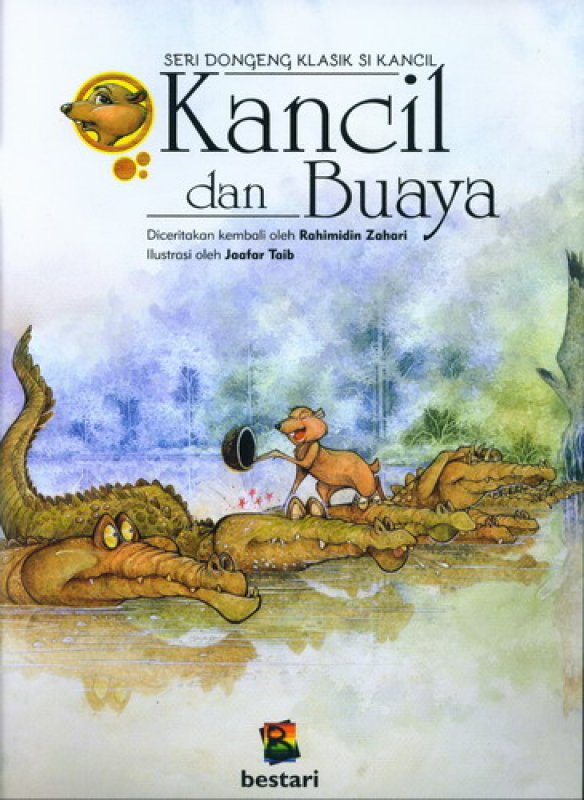
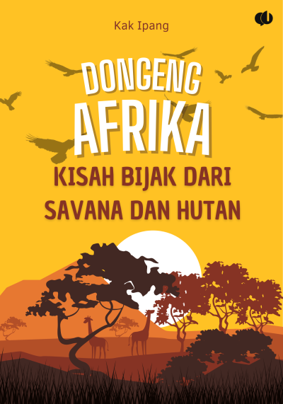

klik disini

klik disini

klik disni

klik disini

klik disini
|
 klik disini |
 klik disini |
klik disni |
klik disini |
klik disini |
| Kancil dan Buaya | Dongeng Afrika | Kisah, Perjuangan, & Inspirasi B.J. Habibie | Educated – Tara Westover | Filosofi Teras |
|---|---|---|---|---|
|
Penulis : Rahimidin Zahari & Jaatar Taib Penerbit : Bestari Buana Murni Tahun Terbit : November - 2016 |
Penulis : Kak Ipang Penerbit : Gema Buku Tahun Terbit : 2025 |
Penulis : Weda S. Atma Penerbit : Checklist Media Tahun Terbit : 2017 |
Penulis : Tara Westover Penerbit :Gramedia Pustaka Utama Tahun Terbit : 2021 |
Penulis : Henry Manampiring Penerbit : Kompas Tahun Terbit : 2018 |
| Kancil dan Buaya | Dongeng Afrika | Kisah, Perjuangan, & Inspirasi B.J. Habibie | Educated – Tara Westover | Filosofi Teras |
|---|---|---|---|---|
| " Melihat buah-buahan yang ranum di seberang sungai, Kancil menjadi sibuk berpikir bagaimana cara menyeberangi sungai. Lalu, "Wahai buaya, muncullah kalian semua. Saya mendapat perintah dari Raja Sulaiman untuk menghitung kalian!" seru Kancil." | "Buku ini memuat berbagai dongeng berikut Anansi dan Kotak Kebijaksanaan Singa dan Tikus Kura Kura dan Kelinci Cepat Legenda Pohon Baobab Burung Marabou dan Bangau Putih Hiu dan Burung Layang Layang Si Hyena yang Serakah Si Kancil dan Buaya di Sungai Nil Si Gadis dan Bunga Ajaib Legenda Suku Zulu dan Hujan Emas Bintang Jatuh di Savana Pohon Pisang yang Berbicara Legenda Burung Phoenix Afrika Legenda Harimau dan Penunggunya dan Tikus Padang dan Permata Misterius" | "Buku ini, menceritakan perjalanan hidup B.J Habibie dari masih kecil sampai akhir hayatnya. Dengan membaca biografi B.J Habibie, kamu bisa mendapat banyak pelajaran seperti optimisme dalam belajar, berbisnis, meniti karir, dan menghadapi berbagai tantangan. Biografi beliau memberi banyak inspirasi bagi anak muda. " | "Orang kaya membuat uang bekerja untuk mereka." | "Kita tidak bisa mengendalikan semua yang terjadi, tapi kita bisa mengendalikan cara kita meresponsnya." |